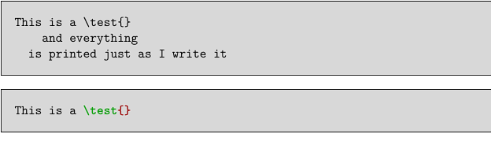

Contents
Summary
The command \setuptyping is used to setup verbatim text (code highlighting).
Settings
| \setuptyping[...,...][...=...,...] | |
| [...,...] | name |
| oddmargin | dimension |
| evenmargin | dimension |
| margin | yes no standard dimension |
| option | mp lua xml parsed-xml nested tex context none name |
| style | style command |
| color | color |
| align | see \setupalign |
| lines | yes no normal hyphenated |
| space | on off normal fixed stretch |
| keeptogether | yes no |
| before | command |
| after | command |
| strip | yes no number |
| range | number name |
| tab | yes no number |
| escape | yes no text processor->text |
| indentnext | yes no auto |
| continue | yes no |
| start | number |
| stop | number |
| step | number |
| numbering | file line no |
| blank | see \blank |
| Option | Explanation | ||||||||||||||||
|---|---|---|---|---|---|---|---|---|---|---|---|---|---|---|---|---|---|
| option |
|
||||||||||||||||
| lines |
|
||||||||||||||||
| space |
|
||||||||||||||||
| strip |
|
||||||||||||||||
| range |
|
||||||||||||||||
| escape |
|
||||||||||||||||
| continue |
|
||||||||||||||||
| start |
|
||||||||||||||||
| stop |
|
||||||||||||||||
| step |
|
||||||||||||||||
| numbering |
|
||||||||||||||||
Description
Changes options for displaying verbatim text. When called with a single argument, this command changes the options for all typing environments:
\starttyping
,
\startTEX
etc. as well as
\typefile
.
With the optional argument, it affects only specific typing environment (as created with \definetyping).
\setuptyping can be used multiple times to change options, and options will stay in effect until the end of file.
Examples
Example 1
-
\setuptyping [before={\startframedtext[width=\textwidth, background=color, backgroundcolor=lightgray]}, after={\stopframedtext}] \starttyping This is a \test{} and everything is printed just as I write it \stoptyping \startTEX This is a \test{} \stopTEX
- 